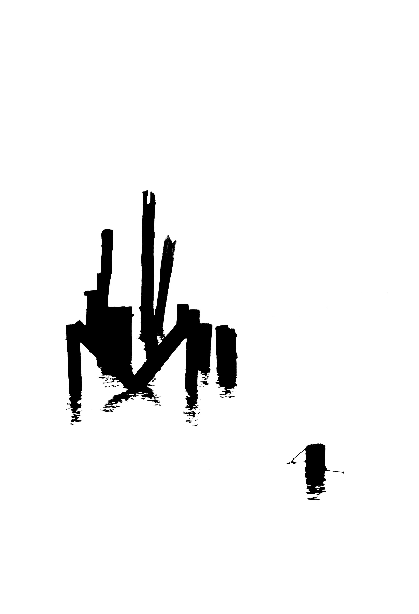
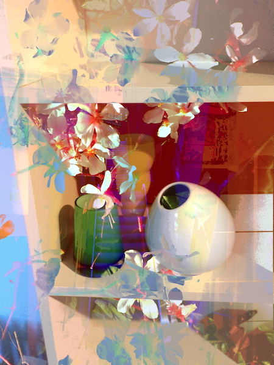
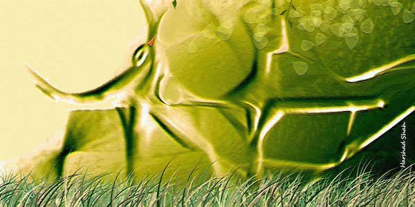
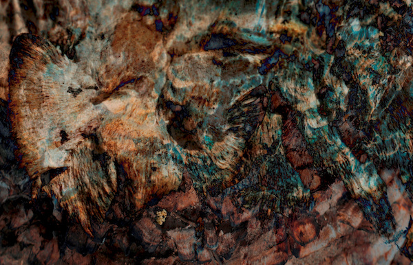
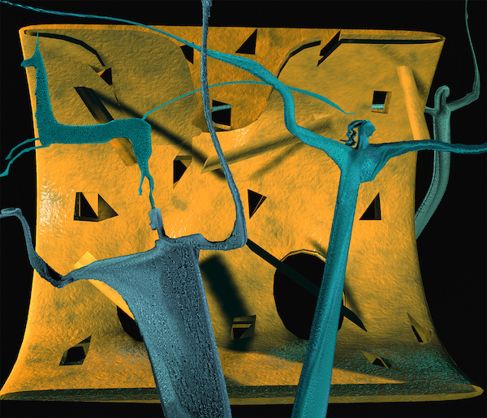
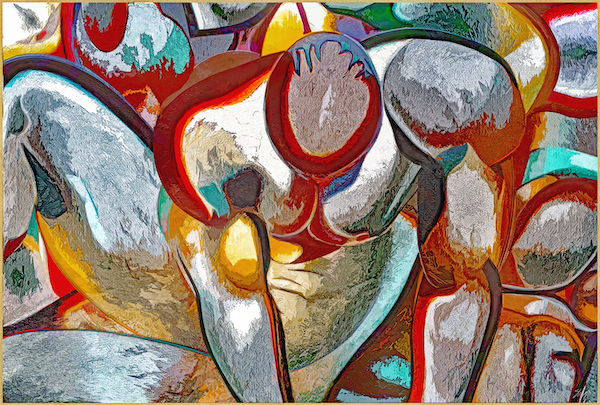
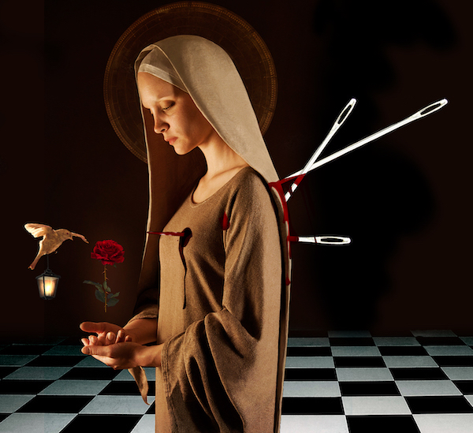
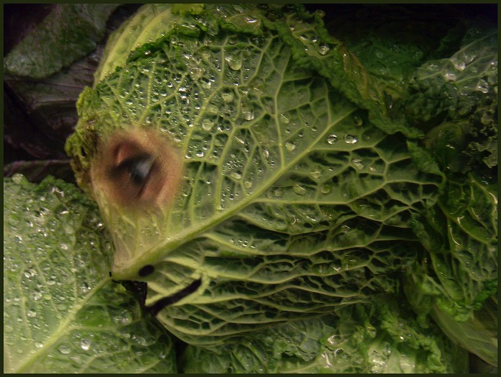
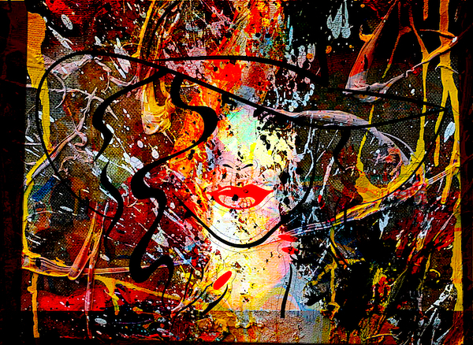
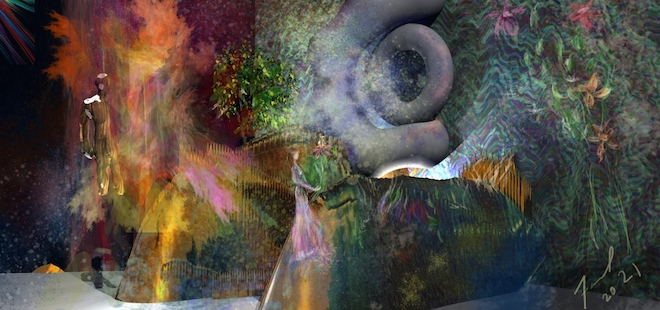

IMAGES OF THE DAY 27
Pilings 
Upright Painted Begonia 
Nature 
Demon 
Interactive Prehistory 
Narcissus 
The Wounded Saint 
CabbHD 
Fashionista 
by Fariel Shafee 
03/11/2022 - 03/20/2022
by Russell Streur
03/11/2022
by Clay Bodvin
03/12/2022
by Harshad Shah
03/13/2022
by Bjoern Daempfling
03/14/2022
by Vincenzo Corrado
03/15/2022
by Shige Yamada
03/16/2022
by Soufiane Kennous
03/17/2022
by Sy Richards
03/18/2022
by Wil Watty
03/19/2022
03/20/2022